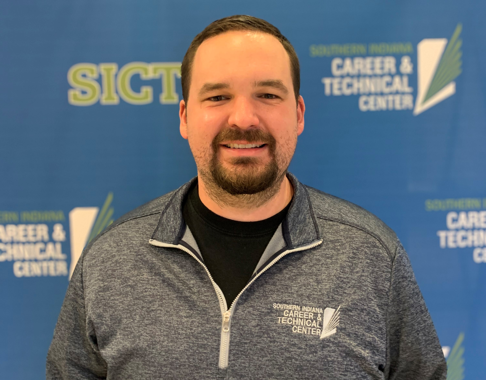

Civil Engineering at Rose-Hulman Institute of Technology
Career Start Year:
2017
Certifications:
Along with having an awesome work environment, I have the opportunity to teach my students in ways that they'll see after high school. We don't sit behind a desk and read a textbook, we learn by building programs and solving problems. In fact, our textbook is what developers use in the industry, Google...
Contact Information
nic.bander@evsck12.com
812-435-8827
SICTC room number/title

Why I Love Teaching CTE:
When I was 17 years old, I signed up for a Career & Technical Education course entitled Radio Broadcasting. This course was the catalyst for college scholarships, admittance into a Telecommunications program, numerous internships, and a competitive fellowship with the International Radio and Television Society. Since that time, my passion and life's work has been media and I love sharing this curriculum with my students each day in our classroom and lab.
Fun Fact:
I have self taught myself all of the instruments I play except for the saxophone. I took 8 years of band from 5th grade to senior year to learn the saxophone. I can play the acoustic guitar, ukulele, bass guitar, drum set, djembe, cajon, spoons, and am currently attempting to learn the banjo. Emphasis on attempting.